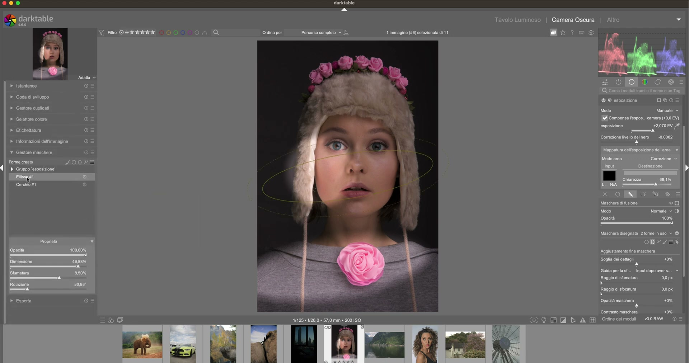

Combinare le Maschere¶
Il vero potere delle maschere emerge quando si combinano piu' tipi insieme: drawn + parametric, raster, e le nuove maschere AI.1
Drawn + Parametric¶
Esempio: saturare solo l'erba verde in primo piano, escludendo alberi e cielo.
- Crea una maschera disegnata (gradiente) che copra la meta' inferiore
- Aggiungi una maschera parametrica su Hue per selezionare i verdi
- Aggiungi un'esclusione parametrica su L per le ombre scure (alberi)
- La maschera finale e' l'intersezione: solo erba verde illuminata nella meta' inferiore
Intersezione gradiente
Usare l'intersezione del gradiente nel Gestore Maschere per transizioni piu' naturali.6
Maschere raster¶
Le maschere raster riutilizzano la maschera gia' calcolata da un altro modulo.2
Creare in cima alla pipeline
Creare le maschere raster nel modulo Esposizione (in cima alla pipeline) per massima compatibilita' con i moduli a valle.3
Raffinamenti indipendenti
I raffinamenti (feather, detail) sono indipendenti per modulo: puoi modificarli senza alterare la maschera di base.3
Limitazione
Le maschere raster NON possono essere combinate con maschere disegnate (come i gradienti). Ricreare usando strumenti disegnati e il gestore maschere.5
Maschere raster esterne (dt 5.2+)¶
Importazione di maschere create con software esterno:7
- Esportare l'immagine senza trasformazioni geometriche (NO crop, NO lens correction, NO rotation)
- Usare formato PNG (TIF puo' causare errori nella conversione PFM)7
- Creare la maschera nel software esterno
- Convertire in formato PFM (Portable Float Map)
- Importare tramite il modulo External Raster Masks
File PFM
I file PFM occupano spazio significativo e NON devono essere cancellati o spostati, altrimenti la maschera si rompe.7
Canali colore
Sfruttare i singoli canali (R, G, B) della maschera per isolare aree specifiche o regolare l'intensita' dell'effetto.7
Per il workflow completo con maschere esterne: darktable 5.2 -- External Raster Masks module4 | Documentazione ufficiale2
Maschere AI (SAM2, dt 5.6+)¶
darktable 5.6 introduce maschere AI integrate basate su SAM2 (Segment Anything Model):8

Modelli disponibili¶
Sono disponibili diversi modelli AI, ognuno con caratteristiche proprie:9
| Modello | Caratteristiche | Note |
|---|---|---|
mask sam2.1 hiera small |
Leggero e veloce, buon compromesso qualita'/performance | Scaricato ma non abilitato di default |
mask sam2.1 hiera base plus |
Qualita' superiore, piu' lento | Modello intermedio |
mask segnext vitb-sax2 hq |
Alta qualita', tempi di elaborazione piu' lunghi | Abilitato di default |
Configurazione iniziale¶
- Aprire Preferenze -> sezione AI
- Abilitare Enable AI features
- Impostare Execution provider su
auto(rilevamento automatico) - Scaricare e abilitare il modello desiderato dalla lista
Accelerazione GPU
Su macOS (Apple Silicon) l'accelerazione CoreML e' inclusa di default. Su Windows e' incluso DirectML. Su Linux e' necessario installare ONNX Runtime con supporto GPU (CUDA per NVIDIA, ROCm per AMD, OpenVINO per Intel) tramite lo script in tools/ai/.9
Per verificare che la GPU sia attiva, avviare darktable con darktable -d ai e cercare nel log:
Creazione della maschera¶
- Nel Gestore Maschere, aggiungere una nuova maschera di tipo AI object
- Attendere la fase di analisi dell'immagine (appare "object mask: analyzing image...")
- Tracciare approssimativamente sul soggetto con il pennello: la dimensione del pennello va scelta prima di iniziare
- Rilasciare il pulsante del mouse per confermare immediatamente la maschera8
{kind=link}
- L'AI genera automaticamente un contorno vettoriale preciso attorno al soggetto
Raffinamento con punti di controllo¶
Dopo la generazione iniziale, la maschera puo' essere perfezionata:
- Click sinistro: aggiungi punto positivo (includi area)
- Click destro / centrale: aggiungi punto negativo (escludi area)8
- ++shift+click++: rimuovi un punto di controllo esistente
- A: zoom in/out senza modificare la maschera
- ++shift+wheel++: regola il feathering
- M: mostra/nascondi la maschera in sovrapposizione
{kind=link}
I parametri disponibili nel pannello proprieta' includono:
| Parametro | Funzione |
|---|---|
| Cleanup | Pulizia dei bordi e rimozione artefatti |
| Smoothing | Smussatura del contorno (valori bassi = maggiore precisione) |
| Size | Dimensione della maschera |
| Feather | Sfumatura dei bordi |
| Opacity | Opacita' della maschera |
| Mask contrast | Contrasto dell'effetto applicato |
| Mask exposure | Esposizione dell'effetto applicato |
Vettorizzazione: il vantaggio chiave¶
Le maschere AI integrate sono vettoriali, non raster. Questo ha implicazioni fondamentali:

Salvataggio nel file XMP
Le maschere AI vettorizzate vengono salvate direttamente nel file .xmp di darktable come dati codificati in base64 nel campo mask_points. Un file XMP tipico occupa solo ~14 kB per l'intero set di parametri e maschere, senza alcun impatto significativo sulla dimensione del file RAW.8
Questo significa che: - Nessun file PFM esterno da gestire, spostare o conservare - Portabilita' totale: copia il file XMP e la maschera segue l'immagine - Eliminazione sicura di eventuali file temporanei
Vettorizzare maschere raster esterne
Anche le maschere raster generate da plugin esterni (es. SAM3) possono essere vettorizzate tramite il pulsante Vectorize nel modulo External Raster Masks. Questo processo converte la maschera raster in un percorso vettoriale, permettendo di eliminare il file PFM e risparmiare spazio disco.8
Limitazioni e workaround¶
Bordi complessi
Il mascheramento AI puo' diventare inefficiente su bordi complessi (alberi vs. cielo, rami intrecciati, fogliame). Nei test, l'AI ha selezionato erroneamente il cielo invece della vegetazione, o ha perso dettagli fini tra i rami. In questi casi, le maschere disegnate o parametriche sono piu' veloci e precise.8
Workaround: selezionare l'area piu' semplice (es. il cielo) e invertire la maschera per isolare la vegetazione.
Prompt testuali instabili
I prompt testuali nei modelli AI (es. "select sky", "select dog") possono essere instabili o fallire silenziosamente. Il modello puo' non riconoscere il soggetto desiderato o produrre risultati inaspettati. Se ci sono problemi, passare alla selezione manuale a punti (click positivi/negativi).8
Maschere vettoriali e forme organiche
Le maschere vettoriali (incluse quelle AI) sono inadatte a forme estremamente complesse o organiche. Per cieli con alberi, bordi frattali o texture molto dettagliate, preferire maschere raster o parametriche.8
Quando usare le maschere AI vs alternative¶
| Scenario | Approccio consigliato | Motivazione |
|---|---|---|
| Soggetto ben definito (persona, animale, oggetto) | Maschera AI | L'AI riconosce e contorna automaticamente con precisione |
| Cielo semplice (senza alberi) | Maschera AI o parametrica su L | Entrambi efficaci, la parametrica e' piu' veloce |
| Alberi/vegetazione vs cielo | Maschera parametrica o disegnata | L'AI fatica con i bordi complessi tra rami e cielo |
| Dettagli fini (capelli, peli, bordi sottili) | Maschera raster esterna (SAM3) | Le maschere raster gestiscono meglio le transizioni morbide |
| Selezione rapida in batch | Maschera AI | Una volta configurata, si applica con un click |
| Paesaggi con elementi multipli | Combinazione drawn + parametric | Maggiore controllo su ogni elemento |
Performance¶
Performance su CPU vs GPU
L'inferenza AI su CPU funziona immediatamente senza configurazioni aggiuntive, ma puo' richiedere diversi secondi per immagine. Con GPU acceleration (CUDA, CoreML, DirectML), il tempo di generazione si riduce drasticamente.9
Per monitorare le performance:
- Avviare con darktable -d ai per il debug completo
- Verificare il provider attivo nel log (CUDA, CoreML, DirectML)
- I modelli small sono significativamente piu' veloci dei modelli hq
Analisi iniziale dell'immagine
La prima attivazione di una maschera AI richiede la fase di analisi dell'immagine, che puo' richiedere alcuni secondi. Le modifiche successive con punti di controllo sono invece quasi istantanee.8
Esempi pratici8¶
Esempio 1: Ritratto di animale (macaco)
{kind=link}
- Maschera AI integrata (SAM2) sul soggetto: risultato eccellente con contorni precisi
- Applicata al modulo Tone Equalizer per regolare l'esposizione del soggetto
- Raffinamento con riduzione dello smoothing per preservare i dettagli del pelo
- Feathering minimo (0.05%) per transizioni nette sui peli
- File XMP risultante: 14 kB totale, nessuna dipendenza esterna
Esempio 2: Paesaggio con scogliera e alberi - Tentativo con AI su scogliera: risultato buono per il taglio netto alla base - Tentativo con AI su alberi vs cielo: fallimento, l'AI seleziona il cielo invece dei rami - Soluzione: usare maschere parametriche su luminosita' e colore, oppure selezionare il cielo e invertire
Esempio 3: Cane in corsa (con plugin SAM3 esterno) - Selezione tramite plugin SAM3 in modalita' Box o punti - Maschera raster generata come file PFM (~3.6 MB) - Vettorizzazione della maschera raster per eliminare il file PFM - Risultato comparabile alla maschera AI integrata, ma con tempi di elaborazione piu' lunghi
Per il workflow completo con esempi visivi: AI masks in darktable8 | Documentazione ufficiale sulle maschere raster2
Riferimenti visuali¶

{kind=link}
Fonti¶
-
darktable User Manual -- Mask Manager, docs.darktable.org ↩
-
darktable User Manual -- Raster Masks, docs.darktable.org |
processed/darktable-usermanual-en/usermanual-48-en-darkroom-masking-and-blending-masks-raster.md↩↩↩ -
darktable 5.4 UPDATE -- A Dabble in Photography ↩↩
-
darktable 5.2 Release -- A Dabble in Photography ↩
-
Night Sky Full Edit -- A Dabble in Photography ↩
-
Landscape edit with AI -- A Dabble in Photography ↩
-
External raster masks -- A Dabble in Photography ↩↩↩↩
-
AI masks in darktable -- A Dabble in Photography ↩↩↩↩↩↩↩↩↩↩↩
-
discuss.pixls.us -- GPU acceleration for AI features in Darktable |
processed/discuss-pixls/t-gpu-acceleration-for-ai-features-in-darktable-help-needed-testing-install-scri.md↩↩↩